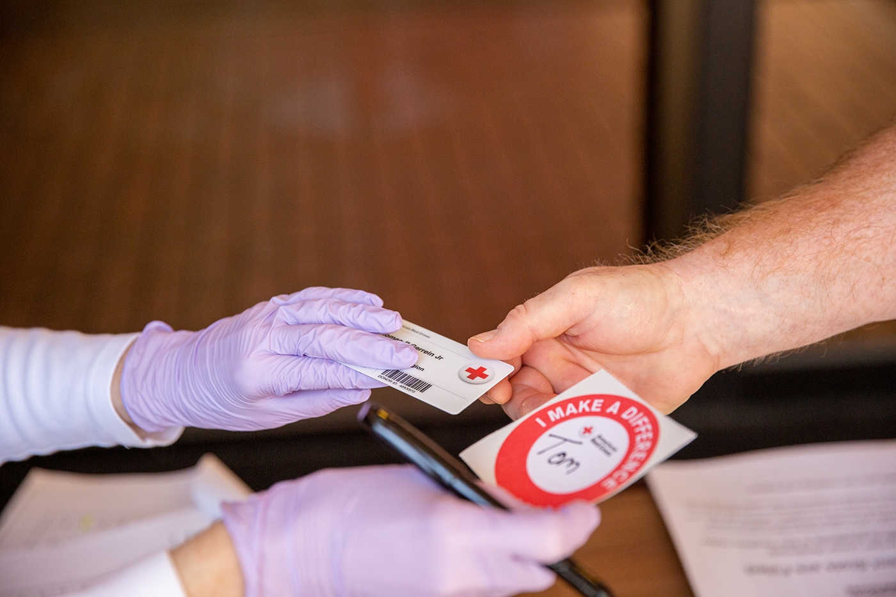
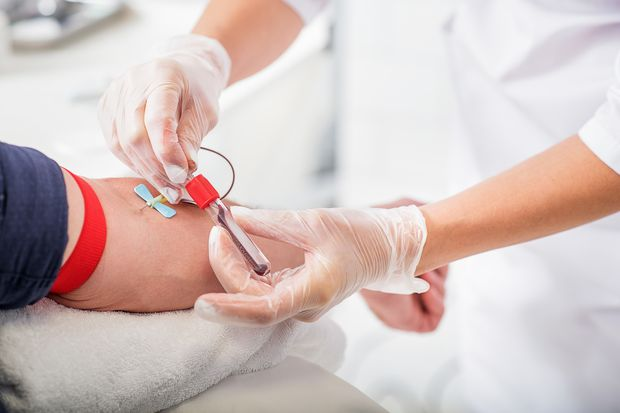
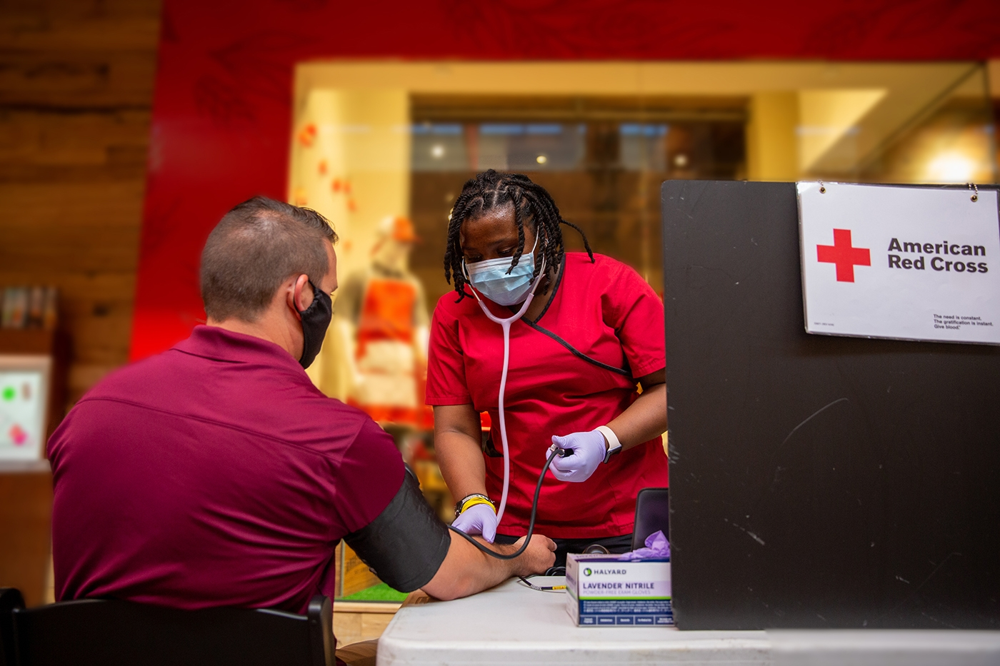
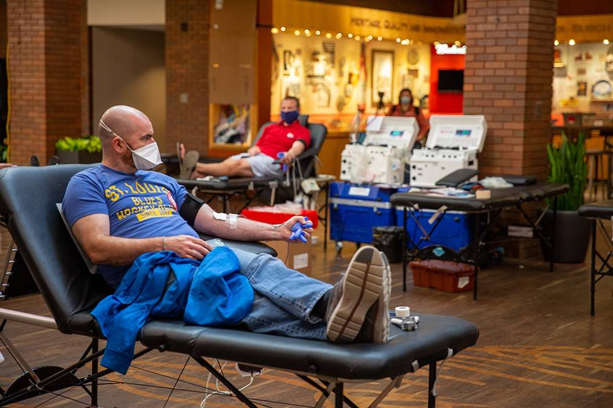
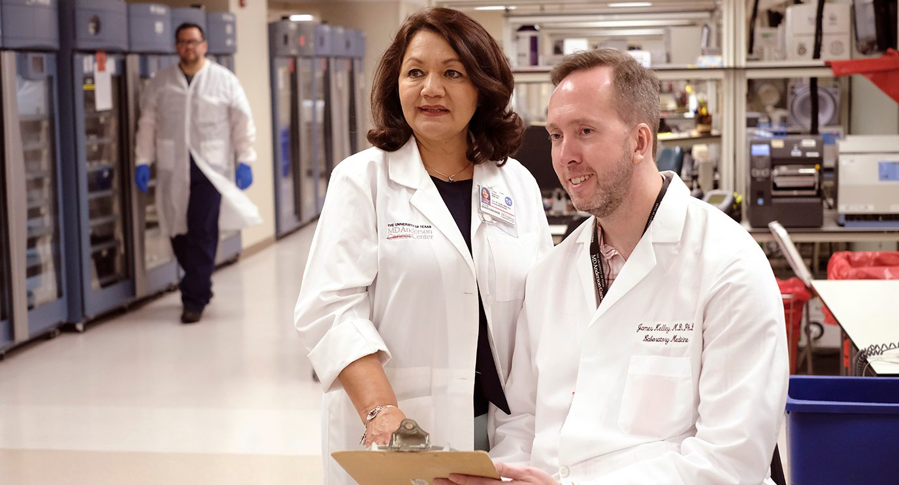

The Blood donation process
The blood donation process from the time you arrive until the time you leave takes about an hour. The donation itself is only about 8-10 minutes on average.
Registration
- You have to register and go over basic eligibility.
- You’ll be asked to show ID, such as your driver’s license.
- You’ll read some information about donating blood.

Health History
- Before you can donate blood, you will be asked to fill out a confidential medical history that includes direct questions about behaviors known to carry a higher risk of bloodborne infections — infections that are transmitted through the blood. All of the information from this evaluation is kept strictly confidential.
- You’ll have to inform about any prescription and/or over the counter medications that may be in your system.
- Your temperature, pulse, blood pressure and hemoglobin levels are checked.
- Because of the risk of bloodborne infections, not everyone can donate blood. The following high-risk groups are not eligible to donate blood.

How you prepare
- Get plenty of sleep the night before you plan to donate.
- Eat a healthy meal before your donation.
- Avoid fatty foods.
- Drink an extra 16 ounces (473 milliliters) of water and other fluids before the donation.
- If you are a platelet donor, remember that you must not take aspirin for two days prior to donating. Otherwise, you can take your normal medications as prescribed.
- You should not smoke in the last 2 hours
- You should not consume alcohol in the last 12 hours leading to donation.
- Disclosing the medical history and any medications you're on is important both for your as well as patient's safety
- Stay Relaxed
Donation
- You lie or sit in a reclining chair with your arm extended on an armrest. A blood pressure cuff or tourniquet is placed around your upper arm to fill your veins with more blood. This makes the veins easier to see and easier to insert the needle into, and also helps fill the blood bag more quickly. Then the skin on the inside of your elbow is cleaned.
- If you’re donating whole blood, we’ll cleanse an area on your arm and sterile needle is inserted into a vein in your arm. This needle is attached to a thin, plastic tube and a blood bag. Once the needle is in place, you tighten your fist several times to help the blood flow from the vein. Blood initially is collected into tubes for testing. When these have been collected, blood is allowed to fill the bag, about a pint. The needle is usually in place about 10 minutes. When complete, the needle is removed, a small bandage is placed on the needle site and a dressing is wrapped around your arm.
- Other types of donations, such as platelets, are made using an apheresis machine which will be connected to both arms.
- During apheresis, blood is drawn from one arm and pumped through a machine that separates out a specific component, such as platelets. The rest of the blood is then returned through a vein in your other arm. This process allows more of a single component to be collected. It takes longer than standard blood donation — typically up to two hours.
- You’ll leave after 10-15 minutes and continue your normal routine.
- Enjoy the feeling of accomplishment knowing you are helping to save lives.
- Share with with friends and family. It may inspire them to become blood donors.


Post Blood Donation
- After donating you sit in an observation area, where you rest and eat a light snack. After 15 minutes, you can leave. After your blood donation:
- Drink extra fluids for the next day or two.
- Avoid strenuous physical activity or heavy lifting for the next five hours.
- If you feel lightheaded, lie down with your feet up until the feeling passes.
- Keep the bandage on your arm and dry for five hours.
- If you have bleeding after removing the bandage, put pressure on the site and raise your arm until the bleeding stops
- If bleeding or bruising occurs under the skin, apply a cold pack to the area periodically during the first 24 hours.
- If your arm is sore, take a pain reliever such as acetaminophen (Tylenol, others). Avoid taking aspirin or ibuprofen (Advil, Motrin IB, others) for the first 24 to 48 hours after donation.
- Avoid alcohol consumption for the remainder of the day.
- Avoid smoking for next 2 hours.
- No heavy physical and strenuous activities for the next 24 hours.
- No heavy weight lifting for the remainder of the day.
- Avoid driving immediately. Take a gap of at least 30-40 mins between blood donation and driving.

Results
- Your blood will be tested to determine your blood type — classified as A, B, AB or O — and your Rh factor. The Rh factor refers to the presence or absence of a specific antigen — a substance capable of stimulating an immune response — in the blood. You'll be classified as Rh positive or Rh negative, meaning you do or don't carry the antigen. This information is important because your blood type and Rh factor must be compatible with the blood type and Rh factor of the person receiving your blood.
- Your blood will also be tested for bloodborne diseases, such as hepatitis, HIV and syphilis. If these tests are negative, the blood is distributed for use in hospitals and clinics. If any of these tests are positive, the donor center notifies you, and your blood is discarded
